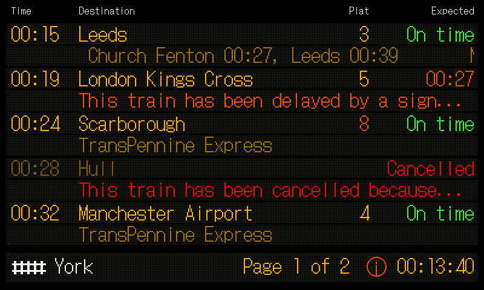
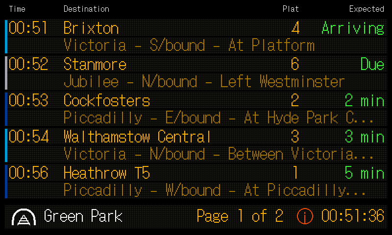
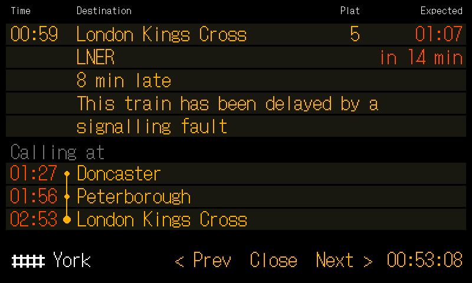

A live UK train departure board for the Elecrow CrowPanel Basic 7.0" (ESP32-S3), fed by Home Assistant.



National Rail stations, plus London Underground and DLR
Delays, cancellations, platforms and calling points; tap a train for its details
Up to 5 stations or routes, switched with a swipe
Station messages, Tube line status and a focus mode
Six themes, three layouts and your own logo
Updates straight from Home Assistant
You need: the CrowPanel 7", Home Assistant 2026.11 or newer, and My Rail Commute (step 4) with a free National Rail Darwin token.
1. Flash the board. Use Chrome or Edge on a computer, with the board plugged in by USB.
This browser can't flash devices. Use Chrome or Edge on a computer.
Wi-Fi. Enter your Wi-Fi details when the page asks. If it doesn't ask, join the Departure-Board Wi-Fi from your phone and pick your network.
Add to Home Assistant. Go to Settings > Devices & services and add the discovered ESPHome device. No key is needed.
Install My Rail Commute and add your station with 10 services. Then, in the station's Configure > Disruption, set Departed train grace period to 1 minute.
Connect them. Import the blueprint, then go to Settings > Automations & scenes > Blueprints > UK Departure Board > Create automation. Pick your board and station, then Save.
Busy station? Add a route in My Rail Commute (your station with a destination) and pick that instead. Tube or DLR? Install London TfL from HACS and pick it under London Underground / DLR stations.
Full guide, settings and troubleshooting: GitHub. Not affiliated with National Rail, TfL or Elecrow.